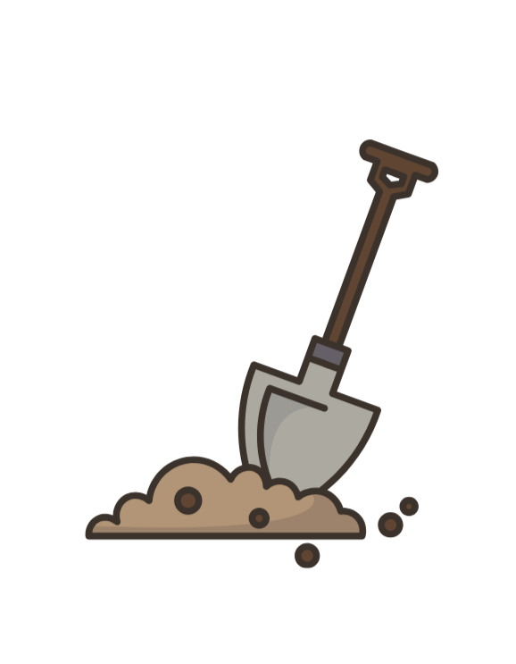
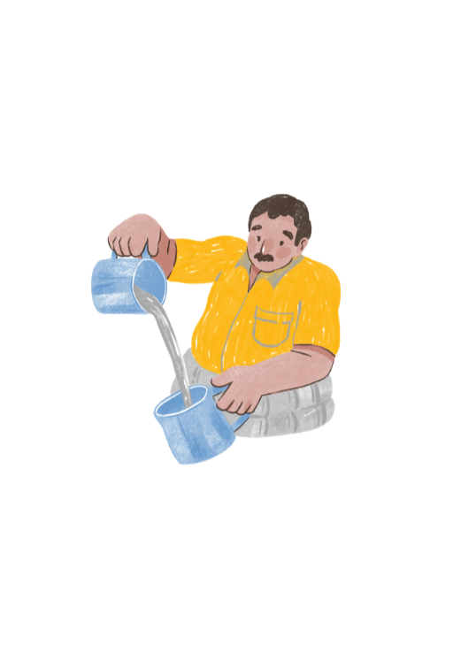
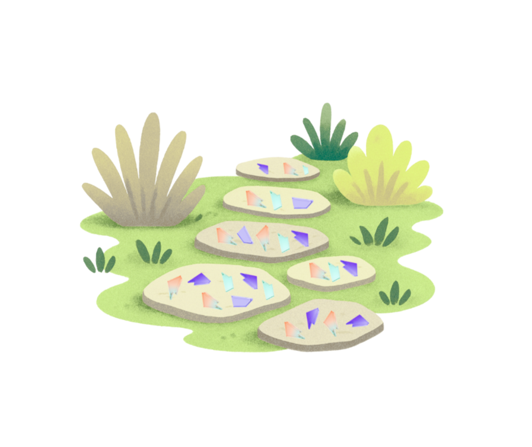
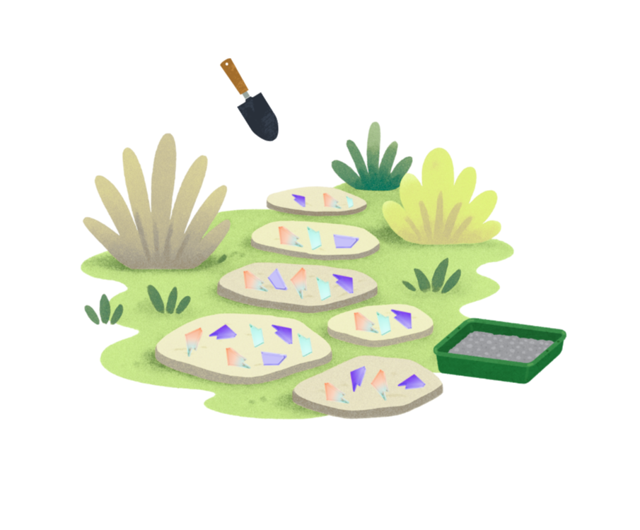
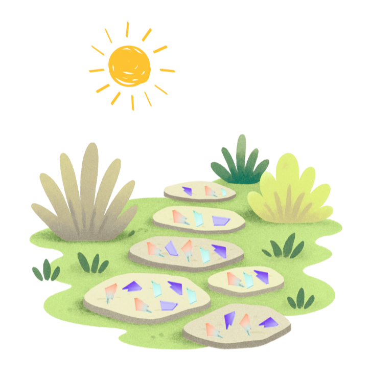
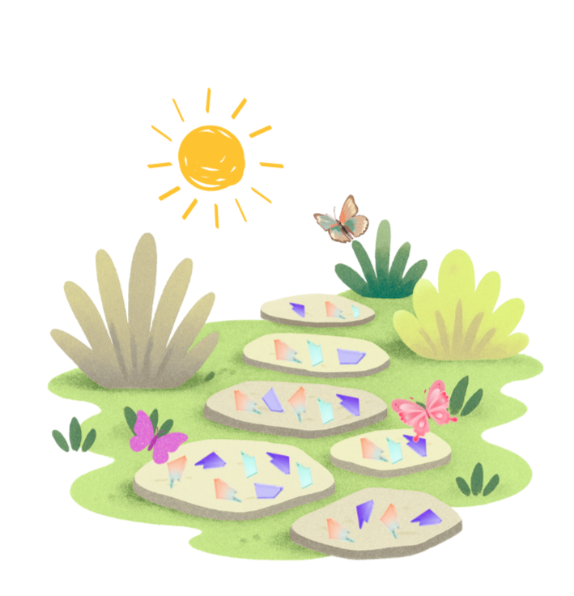

Prepare the materials.
Clean all glass or tile pieces. Smooth sharp edges with sandpaper or a stone. Wear gloves for safety.
Prepare the materials.
Clean all glass or tile pieces. Smooth sharp edges with sandpaper or a stone. Wear gloves for safety.

Mix the concrete. Combine concrete mix with water following package instructions until it reaches a thick, workable consistency.
Pour the base. Fill the mold halfway with concrete and spread it evenly.
Place the glass or tiles. Press glass or tile pieces gently into the wet concrete, creating a pattern. Keep pieces slightly below the surface.
Cover and smooth. Add more concrete to fully cover the pieces if needed. Smooth the surface with a trowel.
Let it cure. Allow the stepping stone to cure for 24–48 hours. Remove from the mold carefully.
Install in the garden. Set the stepping stone on level ground or embed it slightly into soil or sand for stability.